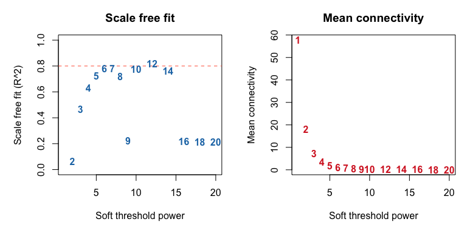
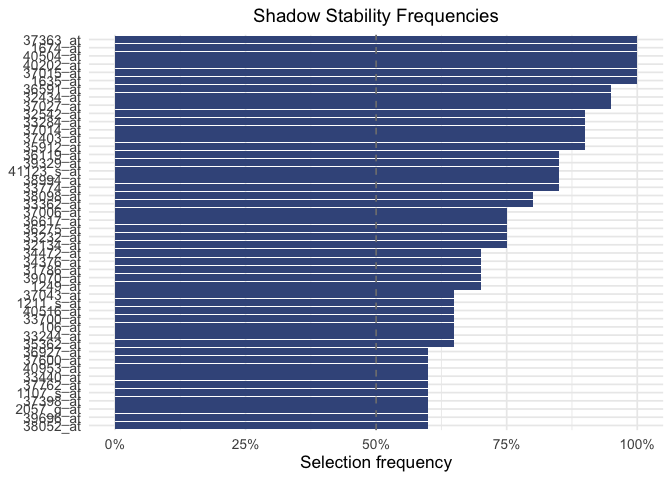
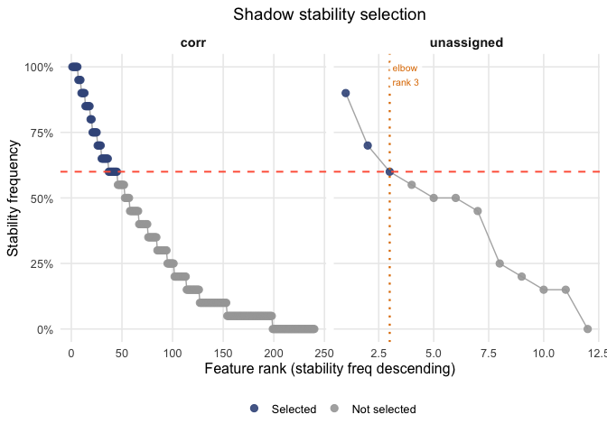
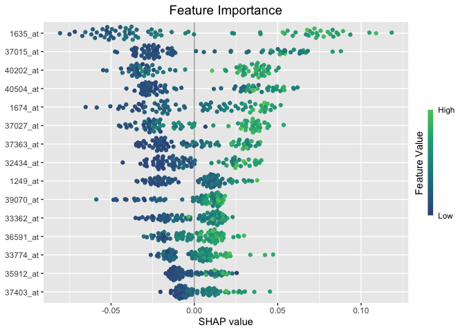
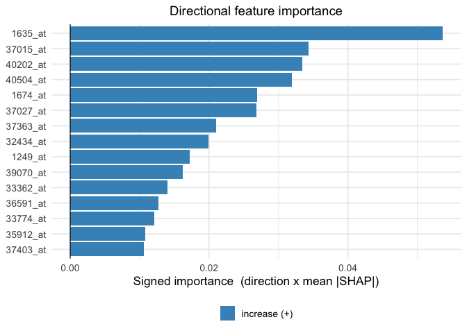
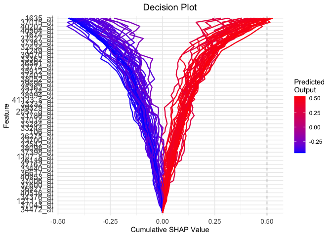

Overview
Mossy Forest (MF) selects a small, stable set of features from high dimensional, correlated data. It first screens features within modules of correlated features, then keeps those that repeatedly beat their own permuted “shadow” copies, and finally explains the stable set with TreeSHAP values.
This vignette runs the whole workflow once on the ALL leukemia
microarray data: build modules with WGCNA, fit MF with the Python
backend, and plot the result using the SHAP values. The longer analyses,
with cross validated tuning on the leukemia and World Bank data, are in
the vignettes/articles folder of the GitHub
repository.
Data
leukemia holds the 500 most variable probe sets for 79
patients, and a 0/1 outcome: 1 for the BCR/ABL subtype, 0 for
cytogenetically normal (NEG).
library(mossyforest)
data(leukemia)
X <- as.data.frame(leukemia$X)
y <- factor(leukemia$y, levels = c(1, 0), labels = c("BCR/ABL", "NEG"))
dim(X)
#> [1] 79 500
table(y)
#> y
#> BCR/ABL NEG
#> 37 42The first level of y is the class that the SHAP values
and the direction of each feature refer to, so here a positive direction
means “higher expression makes BCR/ABL more likely”.
Modules with WGCNA
MF works within modules of correlated features. We build them with WGCNA.
Choosing the soft threshold power
WGCNA raises the pairwise correlations to a soft thresholding power . The usual rule is to take the lowest power at which the network is approximately scale free ( near 0.8) while the mean connectivity stays well above zero.
library(WGCNA)
powers <- c(1:10, seq(12, 20, by = 2))
invisible(capture.output(
sft <- pickSoftThreshold(X, powerVector = powers,
networkType = "signed hybrid", verbose = 0)))
fit_idx <- sft$fitIndices
par(mfrow = c(1, 2), mar = c(5, 5, 3, 1))
plot(fit_idx$Power, -sign(fit_idx$slope) * fit_idx$SFT.R.sq, type = "n",
xlab = "Soft threshold power", ylab = "Scale free fit (R^2)",
main = "Scale free fit", ylim = c(0, 1))
abline(h = 0.8, lty = 2, col = "tomato")
text(fit_idx$Power, -sign(fit_idx$slope) * fit_idx$SFT.R.sq,
labels = powers, col = "#1F77B4", font = 2)
plot(fit_idx$Power, fit_idx$mean.k., type = "n",
xlab = "Soft threshold power", ylab = "Mean connectivity",
main = "Mean connectivity")
text(fit_idx$Power, fit_idx$mean.k., labels = powers, col = "#D62728", font = 2)
The fit only approaches 0.8 around , where the mean connectivity is near zero. With only 79 samples and 500 features the criterion is noisy, so we compare the powers with a lower power () directly by how many features each leaves in WGCNA’s grey (unassigned) module.
modules_at <- function(beta) {
blockwiseModules(
X,
power = beta,
networkType = "signed hybrid",
TOMType = "signed",
minModuleSize = 10,
mergeCutHeight = 0.15,
numericLabels = FALSE,
pamRespectsDendro = FALSE,
saveTOMs = FALSE,
verbose = 0
)
}
c(beta_7 = sum(modules_at(7)$colors == "grey"),
beta_4 = sum(modules_at(4)$colors == "grey"))
#> beta_7 beta_4
#> 423 56Power 7 leaves most of the features unassigned, which would leave little structure for MF to work with, so we use .
net <- modules_at(4)
table(net$colors)
#>
#> black blue brown green greenyellow grey
#> 28 74 54 44 13 56
#> magenta pink purple red turquoise yellow
#> 15 17 15 40 91 53WGCNA leaves some features in a grey module. We then move every
feature to the module whose eigensignal it correlates with most (its
maximum kME module), and rename the grey module
"unassigned", which MF treats as its own pool.
kME <- as.data.frame(signedKME(X, net$MEs, outputColumnName = "kME"))
module_names <- sub("^kME", "", colnames(kME))
module_membership <- module_names[max.col(as.matrix(kME), ties.method = "first")]
names(module_membership) <- colnames(X)
module_membership[module_membership == "grey"] <- "unassigned"
table(module_membership)
#> module_membership
#> black blue brown green greenyellow magenta
#> 28 71 62 46 16 15
#> pink purple red turquoise unassigned yellow
#> 22 20 44 97 23 56wmf() does the same module detection internally.
However, running WGCNA yourself, lets you inspect and tune the modules
first.
Fitting Mossy Forest
The Python backend computes exact TreeSHAP values. It needs a Python
environment with scikit-learn, shap and numpy, which you configure once
per session (see ?mf_setup):
mf_setup(condaenv = "my-python-env")We use small settings so the example runs in seconds. For real
analyses keep the defaults (n_reps = 50,
min_ntree = 500).
fit <- mf(
X, y,
module_membership = module_membership,
screen_params = screen_control(min_ntree = 200),
select_params = select_control(n_reps = 20, min_ntree = 200,
unassigned_modules = "unassigned"),
final_ntree = 200,
backend = "python",
verbose = 0,
seed = 2026
)The stable features, with their mean absolute SHAP value, direction and how often they beat their shadows:
nrow(fit$final_SHAP)
#> [1] 48
head(fit$final_SHAP[, c("feature_name", "module_membership", "mean_abs_shap",
"direction", "stability_freq")], 10)
#> feature_name module_membership mean_abs_shap direction stability_freq
#> 1635_at 1635_at turquoise 0.0536 1 1.00
#> 37015_at 37015_at turquoise 0.0343 1 1.00
#> 40202_at 40202_at turquoise 0.0334 1 1.00
#> 40504_at 40504_at turquoise 0.0319 1 1.00
#> 1674_at 1674_at turquoise 0.0269 1 1.00
#> 37027_at 37027_at purple 0.0268 1 0.95
#> 37363_at 37363_at purple 0.0210 1 1.00
#> 32434_at 32434_at pink 0.0199 1 0.95
#> 1249_at 1249_at brown 0.0172 1 0.70
#> 39070_at 39070_at yellow 0.0162 1 0.70Stability
Each bar is a stable feature’s selection frequency. That is, the share of subsample replicates in which it beat its own shadow copy.
plot_stability(fit)
The elbow plot shows the thresholds that decided which features entered the stable set. Filled points pass the threshold. The correlated modules use a fixed threshold, and the unassigned pool uses its own elbow cutoff.
plot_stability_elbow(fit)
SHAP plots
The beeswarm shows the SHAP value of every patient for each stable feature, colored by the feature’s value.
plot_importance(fit, max_display = 15)
The signed importance combines the size of a feature’s SHAP values with the direction of its effect. Bars to the right increase the average predicted outcome, and bars to the left decrease it. Grey bars are features whose effect is not monotone and ambiguous here.
plot_signed_importance(fit, top_n = 15)
The decision plot follows each patient’s prediction as features are added. It shows the cumulative SHAP value, which starts at 0 (the average prediction) and ends at the patient’s final prediction relative to it.
plot_decisions(fit)